of 2014-2015
President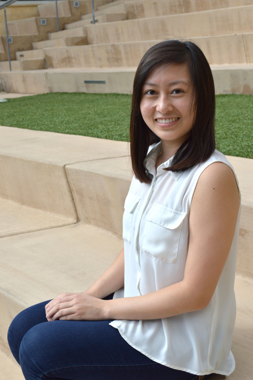
Jenny CamMy name is Jenny Cam and I am a fourth year Human Biology major in Revelle college. In my free time, I love to chat with my friends, play tennis, go shopping, try new foods, and play video games. I am excited to be your Insight President and I look forward to meeting everyone! I joined Insight since I was a first year and I have not regretted it since. I really like how I was able to make meaningful relationships through Insight: from mentors to close friends. Everyone I have met were very resourceful and I learned so much about optometry from them. As a fourth year in the process of applying to optometry school, I hope to be able to provide the same support for my fellow club members. |
Vice President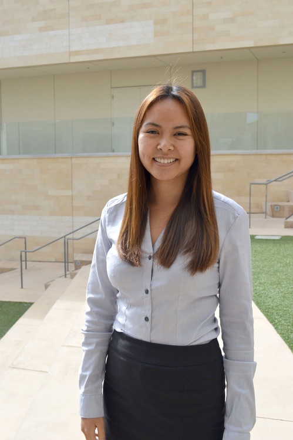
Maria NguyenMy name is Maria Nguyen and I am a 3rd year at ERC. My position is Vice President on Insight. I am involved in other organizations such as Kyrie Eleison and Active Minds. Some of my hobbies are watching TV shows in my pajamas, discovering new restaurants to eat at, and collecting rings from around the world. My favorite thing about Insight is the people that I have met along my pre-optometry journey in college. I have met very insightful people, not only concerning academics, but also in regards to life experiences. I also really like how Insight provides many resources and access to shadowing internships and optometry volunteer services. |
Secretary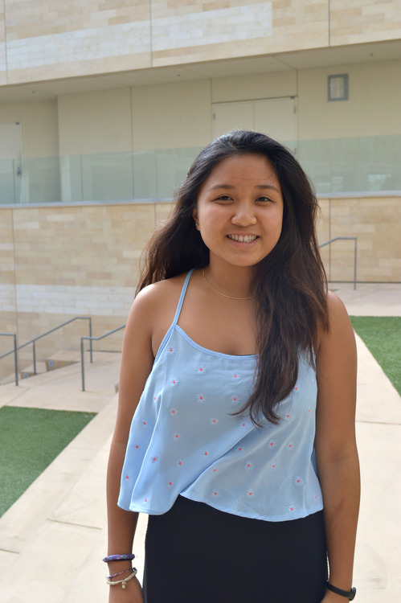
Jordan DulayMy name is Jordan Dulay and I’m a second year General Biology major in Sixth College! I love to go to the gym and the beach and just staying active in general. The Office and Parks and Recreation are my favorite TV shows and I also really enjoy reading. I spend most of my time studying for school, hanging out with friends, volunteering, and of course with Insight! Ever since I was young I have had allergies that have affected my eyes and caused them to be itchy and red. Thus I see my optometrist a lot and over the years I have really come to admire her and the work that she does. She is one of the reasons that I have chosen to pursue optometry as a profession along with other experiences like volunteering at the Braille Institute with visually impaired individuals. |
Treasurer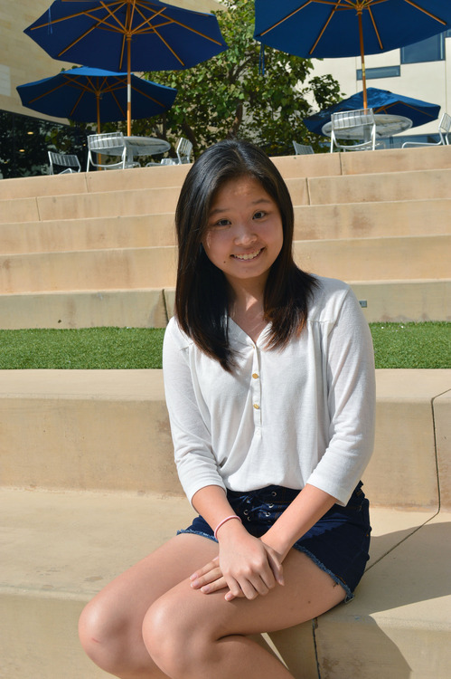
Phoebe ChenHi everyone! My name is Phoebe Chen and I am a second year Human Biology Major in Revelle. I like to dance and sing. I also enjoy traveling and exploring new places! And my favorite tree is a fern tree! One of my favorite things about Insight is the community of people who all have different experiences in the field of optometry. Insight has provided me resources about optometry and an opportunity to meet people who are also interested in the field. It’s been fun getting to know the people in Insight and I hope to get to know more of you! |
Intern Coordinator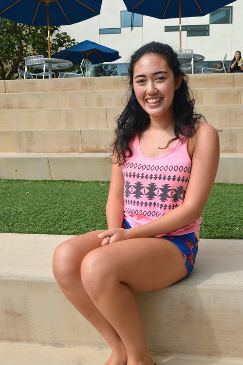
Taylor HowellHi! My name is Taylor Howell and I am the Internship Coordinator for Insight! I’m a third year in Warren College and in my free time, I love going to the beach and playing sports! Currently, I play on the UCSD club field hockey team! Go Tritons! My favorite thing about Insight is all the information and knowledge you can gain about the field of optometry! Whether you are still exploring your options or you are set on becoming an optometrist, Insight has the resources for you to reach your goal! |
Volunteer Coordinator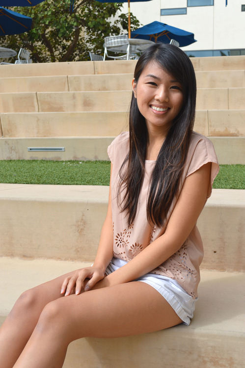
Helen TranHi Insight! My name is Helen Tran. I’m a 4th year Marshall student at UCSD. I will be representing Insight as the Volunteer Coordinator of 2014-2015 :) I hope my previous experience as the Volunteer Chair of the Vietnamese Student Association help bring forth a fun environment for all pre-optometry students. Aside from being involved in several organizations, I find myself going on food runs with my friends and baking for no occasion. The reason I am choosing optometry is because I want to be involved in the healthcare community. With optometry I am not only given the opportunity to allocate more time for patient interactions, but also manage a business if Id’ like or be skillful in an area of eye disease. |
Publicity Chair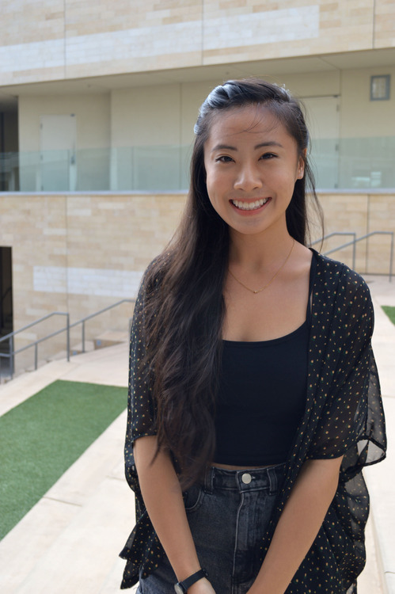
Michelle TranHi I’m Michelle Tran and I’m currently a 3rd year in Thurgood Marshall college. I like any water-related activities, painting, and crafting. I also adore watching cartoons and eating nachos. What I love about Insight is that this organization allows me to interact with the pre-optometry students here at UCSD. I enjoy the sense of community this organization provides for its club members. I hope to participate in more fun optometry-related events with our new & old members! |
Publicity Committee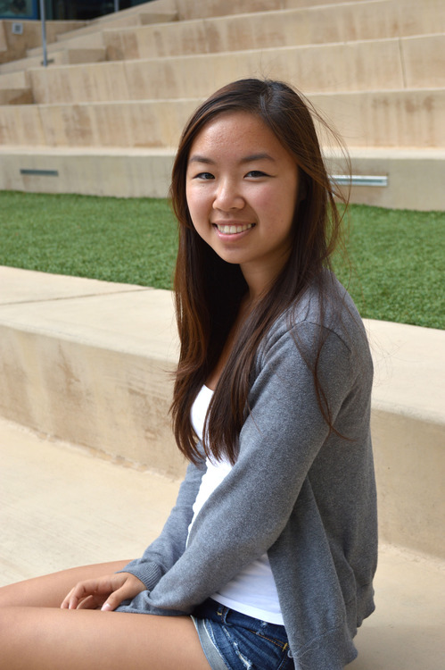
Teresa ChenHello! I am a 3rd year Marshall student and one of your publicity committee members. I love food, late night adventures, and insightful conversations (pun intended). If you ever need a study buddy, I’m probably in Geisel so hit me up :) This summer I went to New York and visited SUNY College of Optometry. Coming from a very laid back environment, New York City was really overwhelming at first - it was like a big slap in the face. I stayed with my mentor from Insight and met with an admissions counselor. They were extremely helpful and really made me feel like home, and it reminded me how friendly and kind-hearted optometrists are. I love Insight because of the people I have met from it, like my mentor, and I want to be an optometrist to be a part of this community. |
Publicity Committee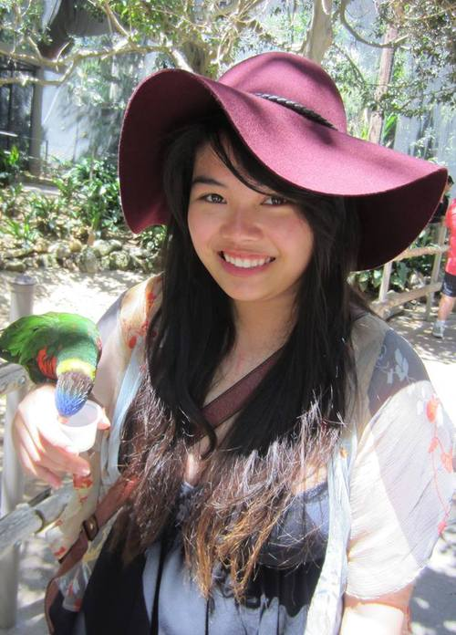
Sophia MohI’m a 3rd year Sixth College student, and I enjoy eating at restaurants, walking at the beach, shopping, and playing badminton. My dream optometry school is UC Berkeley or ICO. If I had to pick an in-state school, I’d pick UC Berkeley because my family is in the Bay Area. I’m also interested in ICO because I visited Chicago once and fell in love with the city. |
Publicity Committee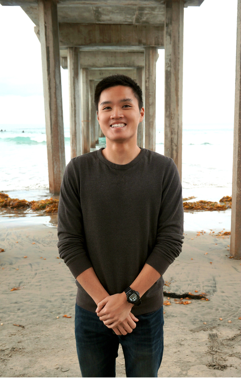
Kevin TranHey! My name is Kevin Tran and I am a third year General Biology major in John Muir College. I was born and raised in the San Fernando Valley, but hope to make San Diego my permanent home someday. When I’m not studying, you can catch me shooting hoops at Muir basketball courts or skateboarding around campus. One thing that I love about Insight is that it provides you with plenty of resources to help you succeed in getting into optometry school. This includes connections to Insight alumni who are currently attending optometry school and are willing to answer any questions. |
Social Chair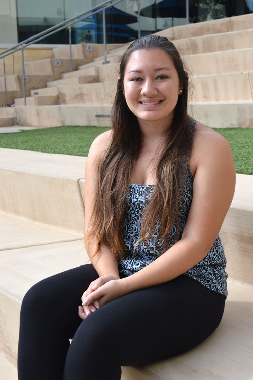
Kiana HollenbeckMy name is Kiana. I am in Sixth College and in my fourth and final year at UCSD. I enjoy swimming, spending time with friends, binge watching shows on Netflix, and finding great food places. My favorite thing about Insight is that this organization is very helpful and informative as well as a good place for people to make friends because everyone is so friendly and welcoming. |
Social Committee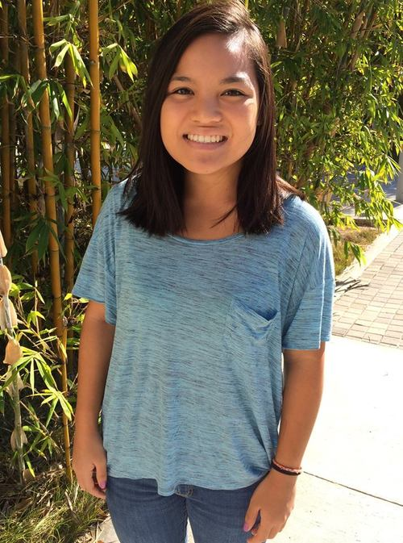
Jackie NguyenHi! My name is Jackie and I am a second year studying Biochemistry and Cell Biology. I am a proud ERC student! In my free time, you can find me outdoors either running, biking, surfing, or hiking. I am currently training for my first marathon which I am extremely nervous, but excited about. I want to be an optometrist because I love talking to people and I love eyes! I like how you can give people the opportunity to see, which is pretty amazing. |